공식 마켓플레이스와 플러그인 설치
Anthropic 공식 마켓플레이스 claude-plugins-official에는 플러그인이 171개 있어요. 발표자는 그중 토큰 절약과 바로 이어지는 네 개를 골랐어요. 각각 토큰이 새는 서로 다른 구멍을 막아요.
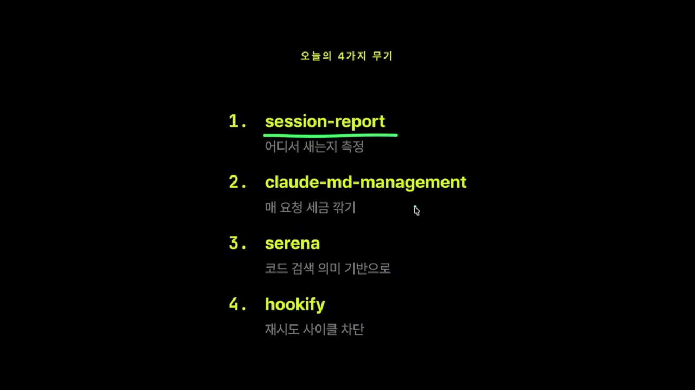
설치하는 법
설치는 Claude Code 안에서 해요. /plugin을 열면 Discover(찾기), Installed(설치됨), Marketplaces(마켓플레이스 관리) 탭이 보여요. 공식 마켓플레이스는 처음부터 등록돼 있어요.
마켓플레이스에 들어가 플러그인을 검색하고, 원하는 스코프를 골라 설치하면 돼요. 목록이 너무 길면 Esc로 한 단계 나와서 검색창에 이름을 바로 치는 게 빨라요. 설치가 끝나면 /reload-plugins로 다시 불러와야 바로 쓸 수 있어요.
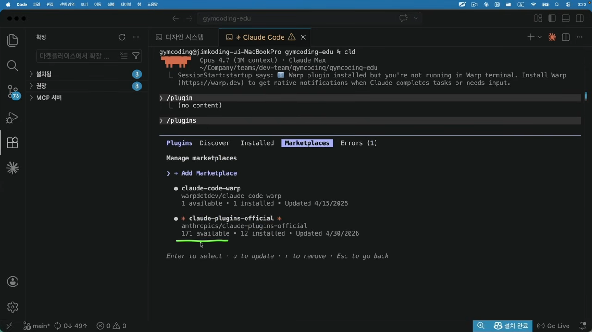
session-report: 토큰 명세서
이 플러그인은 Claude Code의 카드 명세서예요. 카드 명세서가 카페, 주유소, 배달앱에 각각 얼마 썼는지 보여 주듯, 토큰을 프로젝트별·스킬별·서브에이전트별·프롬프트별로 나눠 한 화면에 보여 줘요.
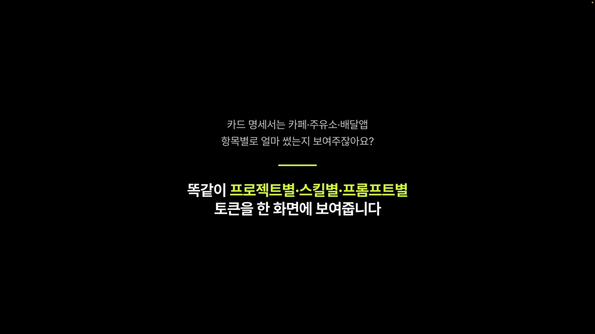
특히 쓸모 있는 상황은 두 가지예요. 한 달 비용이 많이 나왔는데 어디가 문제인지 모를 때, 그리고 캐시가 잘 작동하는지 확인하고 싶을 때예요. 작업 전후를 비교할 때도 써요.
캐시가 왜 중요할까요
Claude Code는 프롬프트 캐싱을 자동으로 써요. 시스템 프롬프트나 CLAUDE.md처럼 매번 반복되는 앞부분을 한 번 처리해 캐시에 넣어 두고, 다음 요청부터는 그 부분을 10분의 1 가격에 처리해요. 캐시가 토큰 비용을 깎아 주는 핵심 장치인 셈이에요. 그래서 캐시가 자꾸 깨지면 할인이 사라져요.
실행하고 읽기
자연어로 '지난 30일 세션 리포트 만들어 줘'라고 해도 되고, 직접 부를 수도 있어요. 발표자는 직접 부르는 쪽을 좋아해요.
| 부르는 법 | 기간 |
|---|---|
/session-report:session-report | 기본값 7일 |
... --since 30d | 30일 |
... --since 24h | 24시간 |
결과는 HTML 파일로 나와요. 맨 위에는 분석 기간, 입력·출력 토큰, 그중 캐시로 처리된 비율, 프로젝트별 사용량이 있어요. 데모 리포트는 7일 동안 1.01B 토큰을 썼고 그중 96.9%가 캐시 읽기였어요. 캐시가 깨진 횟수(cache breaks)도 따로 세어 줘요.
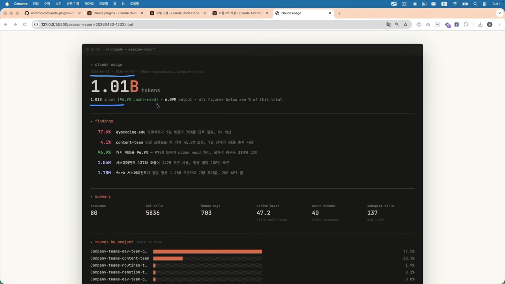
발표자가 가장 중요하다고 꼽은 건 '가장 비싼 프롬프트' 섹션이에요. 프롬프트를 누르면 그 프롬프트가 어떤 작업 사이클을 거쳤는지 펼쳐 볼 수 있어요. 7일 동안의 날짜별 사용 비율도 볼 수 있어요.
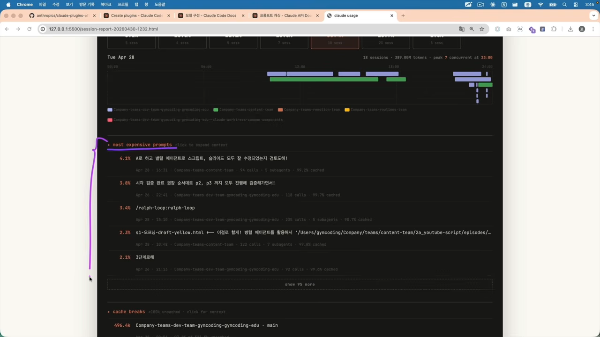
claude-md-management: 매 요청 세금 줄이기
CLAUDE.md는 프로젝트에서 Claude가 지켜야 할 규칙을 적는 파일이에요. 이 파일은 매 요청에 자동으로 따라붙어요. 프로젝트가 길어지면 규칙이 늘고, 규칙이 늘면 파일이 커지고, 결국 모든 요청이 그만큼 무거워져요. 발표자가 '매 요청 세금'이라고 부른 이유예요.
이 플러그인은 그 파일을 날씬하게 지켜 줘요. 도구가 두 개 들어 있어요.
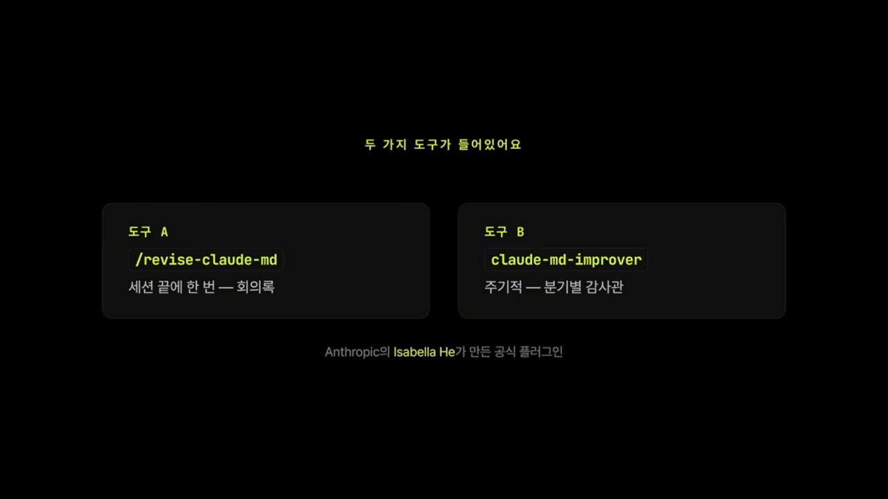
/revise-claude-md: 회의 끝나고 쓰는 회의록
개발을 한참 하고 나면 'CLAUDE.md에 적어 둘걸' 싶은 게 생겨요. 그때 부르면 돼요. 데모에서는 설치 실습만 한 세션이라 추가할 게 없다고 답했어요. 이유도 같이 알려 주는데, 이번 세션에서 코드베이스 파일을 하나도 건드리지 않았다는 거예요.
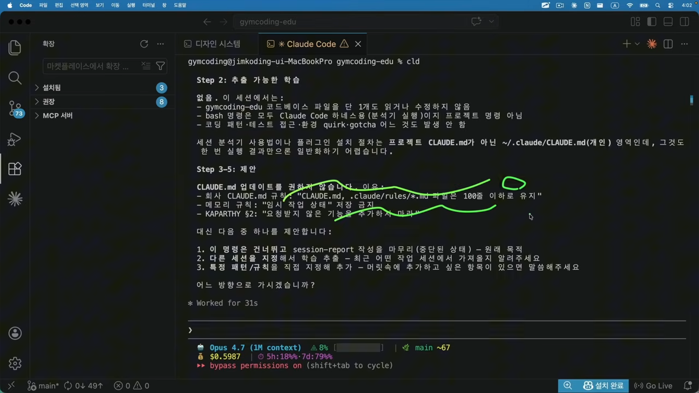
claude-md-improver: 6가지 기준 채점
주기적으로 CLAUDE.md를 검사할 때 써요. 각 파일을 아래 기준으로 채점해서 등급을 매겨요. 거의 안 쓰이는 명령어, 빠진 의존성, 누락된 환경 설정 같은 문제도 함께 짚어 줘요.
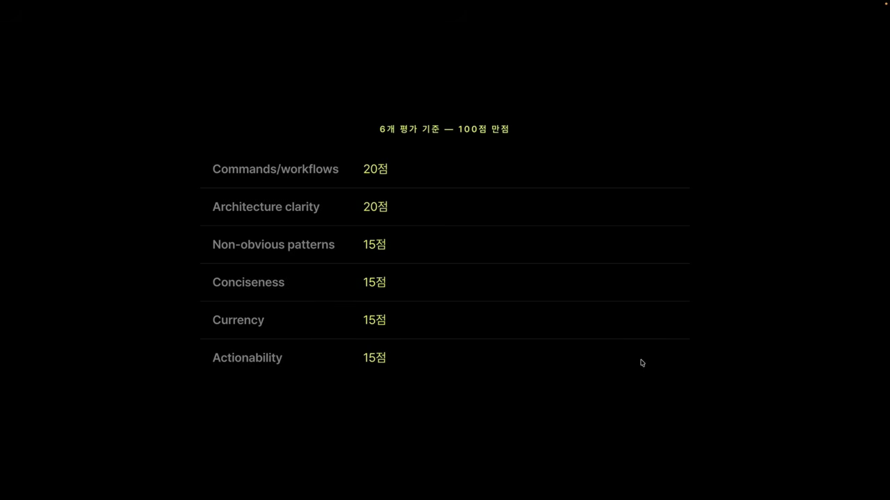
Serena: 글자가 아니라 의미로 찾기
Claude에게 '로그인 기능 확인해 줘'라고 하면, Claude는 login이라는 글자로 프로젝트를 뒤져요. 변수명이든 주석이든 문자열이든 글자만 맞으면 다 읽어요. 반면 IDE에서 Ctrl+클릭하면 정의로 바로 가요. IDE는 코드의 의미를 이해하기 때문이에요. Serena는 이 IDE식 검색을 Claude에게 붙여 주는 MCP 서버예요.
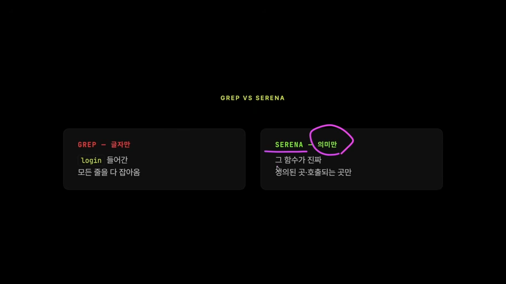
| 상황 | grep (글자 검색) | Serena (의미 검색) |
|---|---|---|
| '로그인 기능 어디 있어?' | login이 들어간 줄을 전부 읽어요 | 정의된 곳으로 바로 가요 |
| '이 함수 어디서 쓰여?' | 비슷한 글자까지 걸려서 결과가 불어나요 | 실제로 호출하는 곳만 돌려줘요 |
AuthContext → SessionContext 이름 바꾸기 | 30개 파일을 하나씩 고쳐야 해요 | rename 한 번이면 끝나요 |
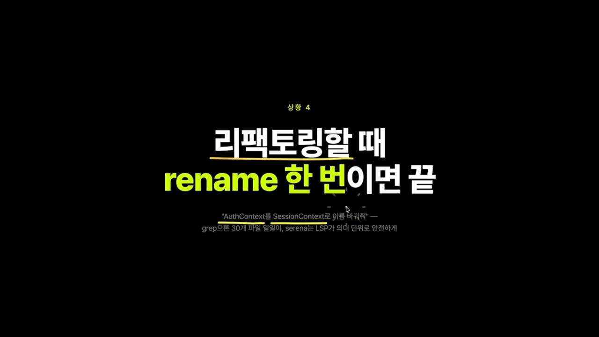
왜 '1등 도구'일까요
발표자가 가장 강조한 건 누적 비용이에요. 글자 검색에 1만 토큰을 썼다고 해 볼게요. 그 검색 결과는 대화가 이어지는 내내 컨텍스트에 남아서, 매 요청마다 다시 들어가요. 대화가 길어질수록 처음 검색 비용이 계속 쌓이는 거예요. 그래서 처음 탐색을 짧게 끝내는 게 대화 전체 비용을 줄여요. 발표자가 Serena를 토큰 절약 1등 도구로 꼽은 이유예요.
Serena는 Anthropic이 만든 게 아닌 외부 도구인데도, 공식 마켓플레이스와 Claude 공식 페이지에 소개돼 있어요.
설치와 연결
플러그인 설치는 앞에서 본 방법 그대로 serena를 검색하면 돼요. 다만 Serena MCP가 제대로 붙으려면 파이썬 패키지 매니저 uv가 시스템에 깔려 있어야 해요. 데모에서도 플러그인을 설치했는데 /mcp를 열어 보니 Serena가 failed 상태였어요.
uv를 설치한 뒤 /mcp에서 Serena를 골라 Reconnect하면 연결되고, 로컬에서 대시보드가 열려요. 데모의 대시보드에는 활성 도구가 26개로 나왔어요.
실제 프로젝트에서 써 보기
'구글 로그인 버튼이 어디에 쓰이냐'고 물었더니, Serena의 find_referencing_symbols가 위치 세 곳을 표로 돌려줬어요. re-export 한 곳, import 한 곳, 실제로 JSX에서 쓰는 한 곳이에요. 덤으로 import 경로가 프로젝트 규칙(barrel 경유 필수)을 어긴 곳도 짚어 줬어요.
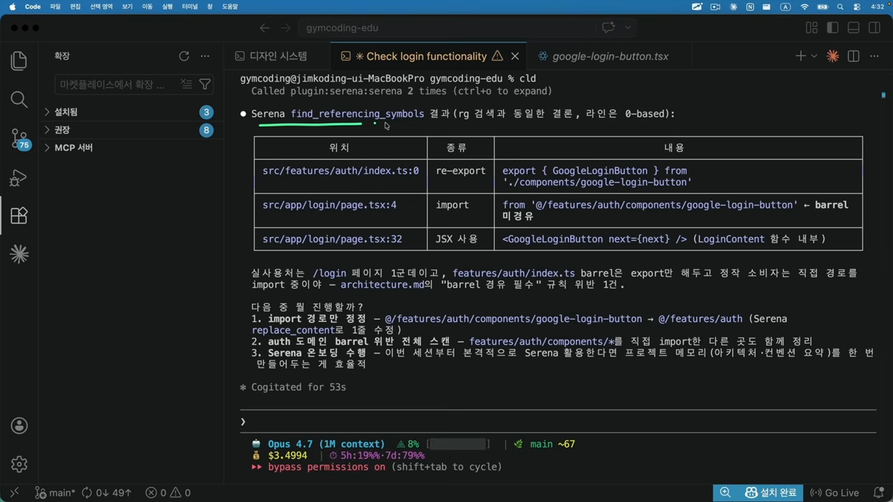
대시보드에는 어떤 도구를 몇 번 썼는지가 찍혀요. 자연어로 요청했는데 원하는 MCP가 안 움직이면, 대화에서 MCP 이름을 직접 언급하라고 조언해요. 데모에서도 'use serena mcp'라고 적으니 프로젝트가 활성화되고 도구가 제대로 돌았어요.
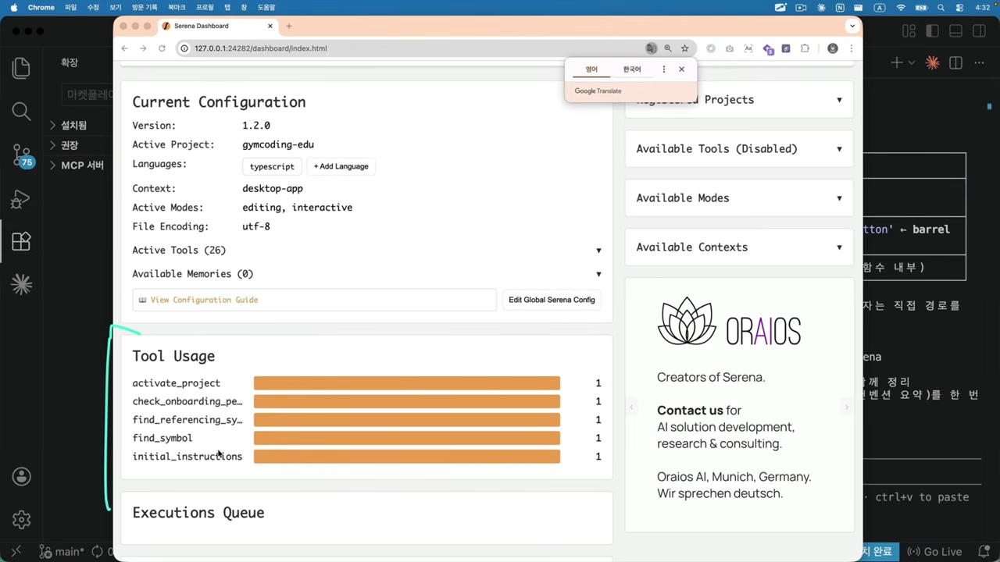
Hookify와 하네스 엔지니어링
마지막은 Hookify예요. 한마디로 Claude가 자주 하는 실수를 미리 막아 주는 도구예요. 발표자는 이 도구가 하네스 엔지니어링의 핵심과 맞닿아 있다고 봐요.
하네스 엔지니어링이란
이 말을 처음 쓴 Mitchell Hashimoto는 자기 블로그에서 이렇게 정의했어요.
anytime you find an agent makes a mistake, you take the time to engineer a solution such that the agent never makes that mistake again.
에이전트가 실수하는 걸 볼 때마다, 그 실수를 다시는 하지 않도록 해결책을 엔지니어링하는 것.
— Mitchell Hashimoto, 'My AI Adoption Journey' (영상 12:10 부근)
AI를 탓하는 대신, 실수가 다시 안 나오도록 환경을 고치는 거예요. Hookify는 이걸 돕는 Anthropic 공식 플러그인이에요.
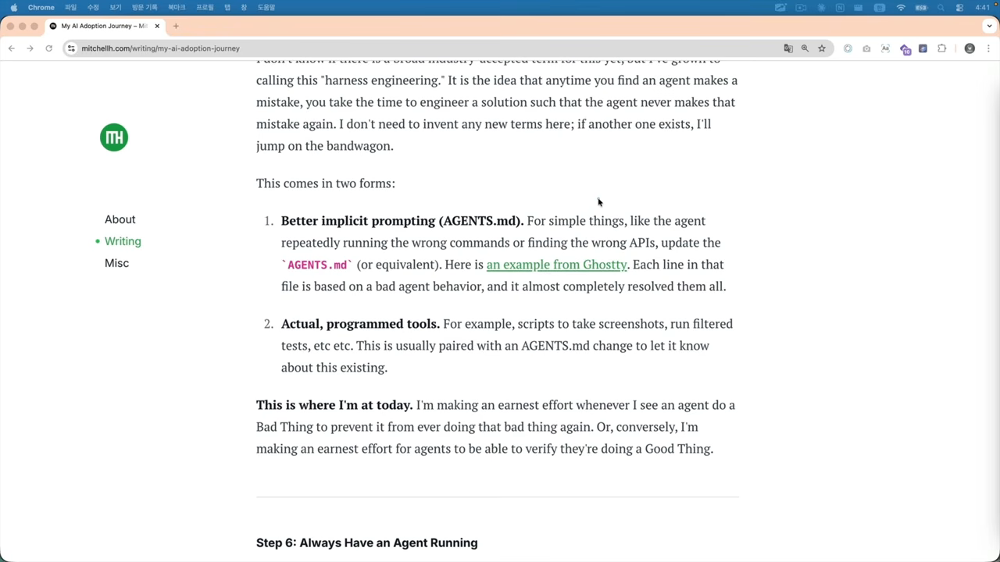
토큰은 어디서 새나요
Claude가 잘못 작업하면, '왜 거기 썼어요?'라고 지적하고, Claude가 사과하고 정리하고, 다시 시도해요. 이 사이클 한 번에 수천 토큰이 사라져요. Hookify는 실수가 일어나기 전에 막아서 사이클 자체를 없애요. 토큰도 아끼고, 작업이 엉뚱한 데로 흘러갈 확률도 줄여요.
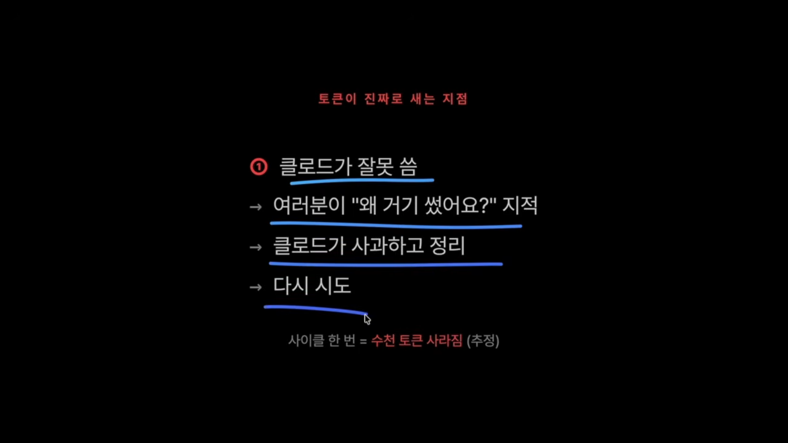
규칙 만들기
/hookify 뒤에 막고 싶은 실수를 자연어로 적으면 돼요. 데모는 '프로덕션 코드에 console.log 쓰지 마'였어요. 스킬이 발동해서 몇 가지 질문을 하고, 답하고 제출하면 .claude/ 아래에 마크다운 규칙 파일이 하나 생겨요.
파일 위쪽 프런트매터에는 언제 발동할지가, 아래 본문에는 Claude에게 보여 줄 지침이 들어가요. 데모 규칙은 이렇게 생겼어요.
- 파일 경로가
src/아래의.ts·.tsx이고 - 테스트 파일(
.test.)이 아니며 - 새로 쓰는 코드에
console.log(가 있으면 경고해요
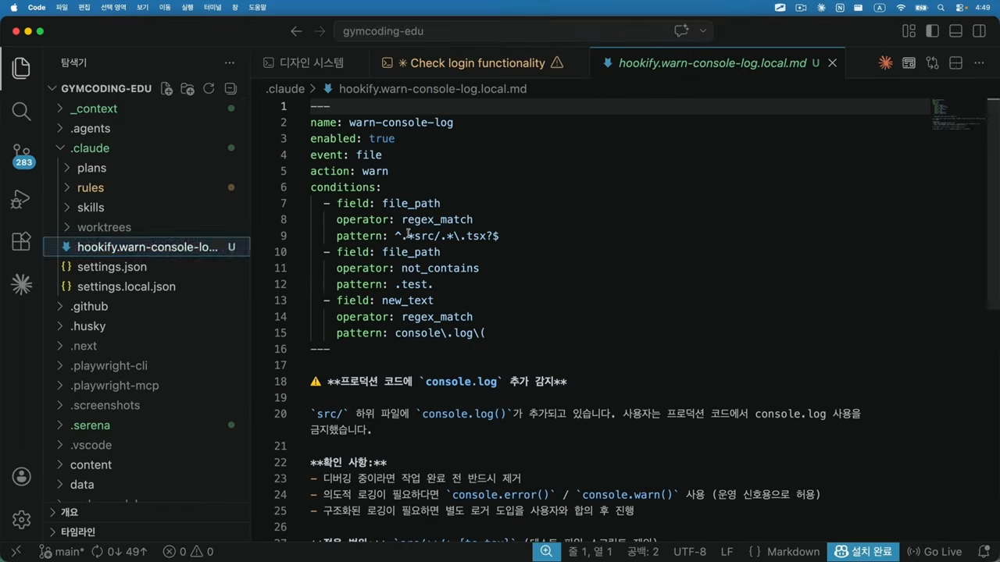
Hookify 명령 모음
| 명령 | 하는 일 |
|---|---|
/hookify <자연어> | 설명대로 규칙 파일 자동 생성 |
/hookify | 최근 대화에서 짜증났던 패턴 자동 추출 |
/hookify:list | 등록된 규칙 보기 |
/hookify:configure | 규칙 켜고 끄기 |
/hookify:help | 사용법 도움말 |
writing-rules | 규칙 문법·정규식 가이드 |
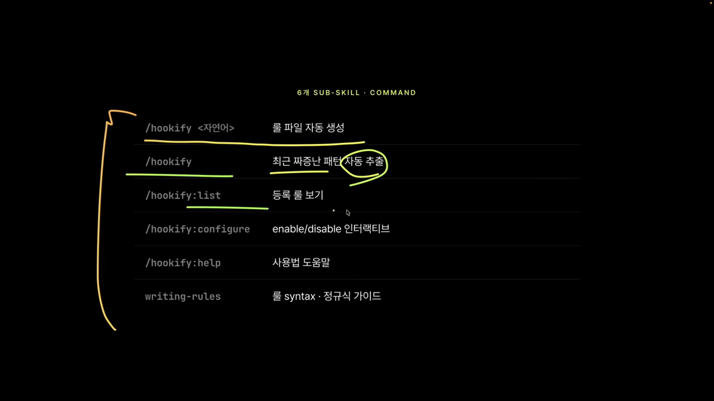
/hookify예요. 영상 13:58에서 보기발표자의 팁은 간단해요. 같은 실수를 세 번 봤다 싶으면 인자 없이 /hookify를 한 번 실행해 보세요. 최근 대화를 훑어서 그 실수를 막는 하네스 규칙을 알아서 추가해 줘요.